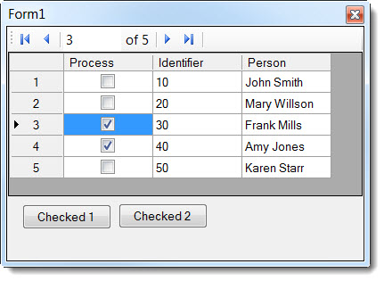
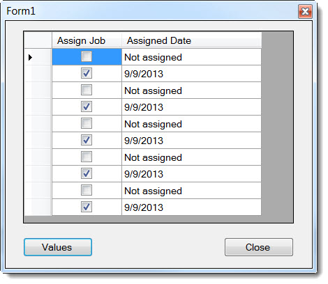

Basics to advance working with DataGridView Checkbox columns
Introduction
The main focus of this article is to demonstrate working with checkbox columns in DataGridView controls ranging from simple to complex where complex is seen this way only when one does not understand "how to" get a business requirement done. What I will use as a data source for all projects is a DataTable and access Boolean values seen as DataGridViewCheckBox columns/cells, more on this shortly.
1/7/2016, added new C# project for demostrating summing.
12/29/2015, added a new C# project
2/2014, began including C# projects (at the current time only one) but more to follow.
Screen shot of one of the project done in C and VB

There are several reasons for using a checkbox in a DataGridView from marking a row of data to process (perhaps export data in a selective manner or delete rows) or to keep track of roles or rights i.e. is the user an administrator, do they have rights to do specific operations in your application etc.
Let me get something out of the way now rather than later, when you are not bound to a data source and are allowing users to add new rows we can get into trouble (code is from project NoDataSource in the attached solution) when not testing for conditions such as, is the row newly added and is there data to collection. Button1 is failed to throw an exception if the second column is empty but not Button2
''' <summary>
''' demonstrates issue when allow user to add rows is not accounted
''' for in code as in Button1 click event while Button2 click event
''' uses assertion for new rows and blank data in new rows.
''' </summary>
''' <remarks></remarks>
Public Class Form1
Private Sub Form1_Load(sender As Object, e As EventArgs) Handles MyBase.Load
DataGridView1.Rows.Add(New Object() {False, "A1"})
DataGridView1.Rows.Add(New Object() {True, "B1"})
DataGridView1.Rows.Add(New Object() {False, "C1"})
End Sub
''' <summary>
''' Doom to throw an exception on newly added rows
''' </summary>
''' <param name="sender"></param>
''' <param name="e"></param>
''' <remarks></remarks>
Private Sub Button1_Click(sender As Object, e As EventArgs) Handles Button1.Click
Try
Dim CheckedRows =
(
From Rows In DataGridView1.Rows.Cast(Of DataGridViewRow)()
Where CBool(Rows.Cells("ProcessColumn").Value) = True
).ToList
If CheckedRows.Count = 0 Then
MessageBox.Show("Nothing checked")
Else
Dim sb As New System.Text.StringBuilder
For Each row As DataGridViewRow In CheckedRows
sb.AppendLine(row.Cells("ActionColumn").Value.ToString)
Next
MessageBox.Show(sb.ToString)
End If
Catch ex As Exception
MessageBox.Show(ex.Message)
End Try
End Sub
''' <summary>
''' Unlike the above this code checks for problems
''' </summary>
''' <param name="sender"></param>
''' <param name="e"></param>
''' <remarks></remarks>
Private Sub Button2_Click(sender As Object, e As EventArgs) Handles Button2.Click
Dim CheckedRows =
(
From Rows In DataGridView1.Rows.Cast(Of DataGridViewRow)()
Where Not Rows.IsNewRow AndAlso
Not String.IsNullOrWhiteSpace(
CStr(Rows.Cells("ActionColumn").Value)) AndAlso
CBool(Rows.Cells("ProcessColumn").Value) = True
).ToList
If CheckedRows.Count = 0 Then
MessageBox.Show("Nothing checked")
Else
Dim sb As New System.Text.StringBuilder
For Each row As DataGridViewRow In CheckedRows
sb.AppendLine("'" &
row.Cells("ActionColumn").Value.ToString & "'")
Next
MessageBox.Show(sb.ToString)
End If
End Sub
End Class
''' <summary> ''' demonstrates issue when allow user to add rows is not accounted ''' for in code as in Button1 click event while Button2 click event ''' uses assertion for new rows and blank data in new rows. ''' </summary> ''' <remarks></remarks> Public Class Form1 Private Sub Form1_Load(sender As Object, e As EventArgs) Handles MyBase.Load DataGridView1.Rows.Add(New Object() {False, "A1"}) DataGridView1.Rows.Add(New Object() {True, "B1"}) DataGridView1.Rows.Add(New Object() {False, "C1"}) End Sub ''' <summary> ''' Doom to throw an exception on newly added rows ''' </summary> ''' <param name="sender"></param> ''' <param name="e"></param> ''' <remarks></remarks> Private Sub Button1_Click(sender As Object, e As EventArgs) Handles Button1.Click Try Dim CheckedRows = ( From Rows In DataGridView1.Rows.Cast(Of DataGridViewRow)() Where CBool(Rows.Cells("ProcessColumn").Value) = True ).ToList If CheckedRows.Count = 0 Then MessageBox.Show("Nothing checked") Else Dim sb As New System.Text.StringBuilder For Each row As DataGridViewRow In CheckedRows sb.AppendLine(row.Cells("ActionColumn").Value.ToString) Next MessageBox.Show(sb.ToString) End If Catch ex As Exception MessageBox.Show(ex.Message) End Try End Sub ''' <summary> ''' Unlike the above this code checks for problems ''' </summary> ''' <param name="sender"></param> ''' <param name="e"></param> ''' <remarks></remarks> Private Sub Button2_Click(sender As Object, e As EventArgs) Handles Button2.Click Dim CheckedRows = ( From Rows In DataGridView1.Rows.Cast(Of DataGridViewRow)() Where Not Rows.IsNewRow AndAlso Not String.IsNullOrWhiteSpace( CStr(Rows.Cells("ActionColumn").Value)) AndAlso CBool(Rows.Cells("ProcessColumn").Value) = True ).ToList If CheckedRows.Count = 0 Then MessageBox.Show("Nothing checked") Else Dim sb As New System.Text.StringBuilder For Each row As DataGridViewRow In CheckedRows sb.AppendLine("'" & row.Cells("ActionColumn").Value.ToString & "'") Next MessageBox.Show(sb.ToString) End If End Sub End Class
I mentioned using a DataTable, this allows you to show some information in the DataGridView while keeping other fields such as an identity field pointing back to a database table. If you loaded a DataGridView from a database table and hide the identity data we do not have access to this data in the DataGridView while using a DataTable we have access to the data. This is demonstrate in the project CheckedSimple_Mocked where hard coded data is placed into a DataGridView, two buttons, one showing how to get checked row data via the data while another button via the DataGridView.
Note: In all project code there are comments where I thought it would assist in learning important things when working with checkbox columns.
Project CheckedSimple_Mocked loads hard coded data from a DataTable then adds a column named process. Think of this as marrying data loaded from a database table with a Boolean column used to allow a user to check off rows they want to do something with. In the Checked 1 button shows how to get data through the data source while Checked 2 from a DataGridView. Unlike Checked 1, Checked 2 is limited to visible columns in the DataGridView. Now you might ask why I have the field Identifier showing? I would like you to try the code as is then hide the Identifier column and try to get it via the column not the data, might want to add a try/catch :-) This is because you can only access visible data.

Project CheckedSimple_MS_Access we obtain data from MS-Access and work with filtering data in a DataGridView in tangent with checkbox logic. What can make this interesting is the filtering in that a user checks off rows then does a filter that does not include current checked rows, to them indeed this can be confusing. Options range from telling them something like "the checked rows are still checked" and show them or do not mix filtering with the checked logic. There are two child forms so you get more than one demo in this project.
Project CheckOneRow shows how to allow only one row checked. Example, there are five rows, check row 1 now check say row 3, row 3 is not checked and row 1 un-checked. Check row 5, now row 5 is checked but none of the other rows. This is all done at the DataTable level and not the DataGridView level for mouse operations. Sadly we must resort to using the KeyUp event for users who like to toggle a selection with the spacebar as the space bar action circumvents a trigger to the DataTable event ColumnChanged and will throw a tissy (an exception) so study the logic in the DataGridView key up event. Also take note of CurrentCellDirtyStateChanged event of the DataGridView to ensure we get current values w/o the need to leave the current row in the DataGridview
Suppose you need to show multiple checkbox columns or more?
Project DualCheckBox_DataGridView and project TripleCheckBox_DataGridView show how to allow only one checked cell per row.

Project DynamicUpdateCheckBoxColumn comes closer to working with the DataGridView cell data than other projects in the solution. Here I wanted to show mixing it up with CheckBox, text and dates with only two columns

Hopefully the projects included have been done clearly to allow you to learn how to work with CheckBox columns in DataGridView controls. Please take your time and explore as I have only touched the surface of what is in the source code.